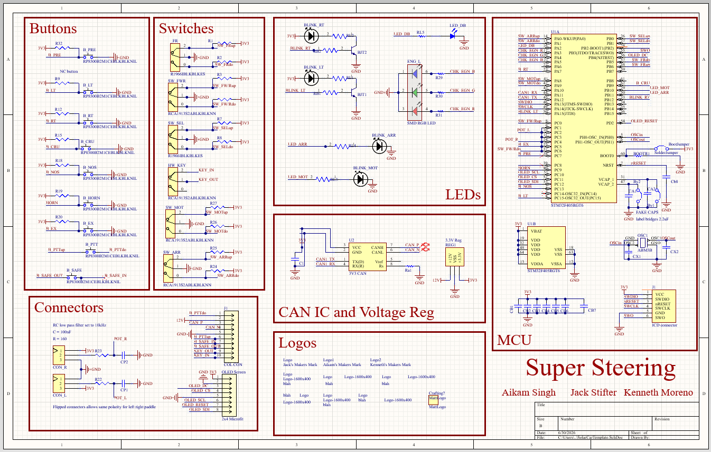
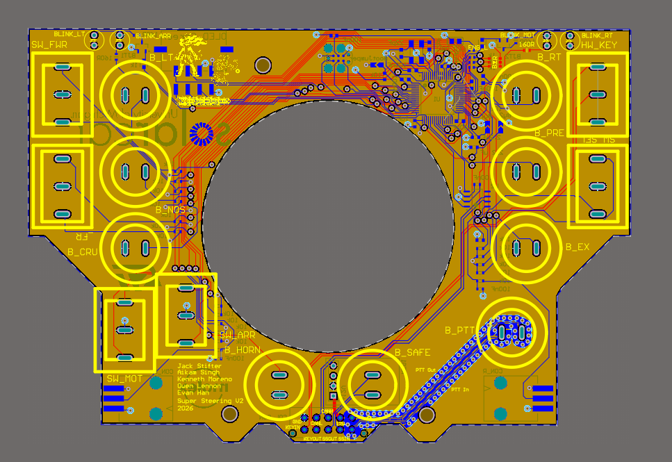
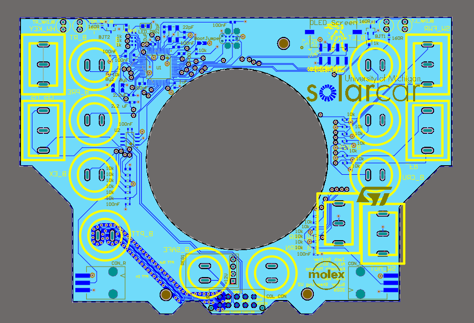

The Problem
Michigan Solar Car competes in the Bridgestone World Solar Challenge across the Australian outback every odd year. The steering wheel carries all the driver inputs and displays the telemetry the driver needs to make real-time decisions. If it fails, the race could be jeopardized.
The 2025 wheel used in WSC25 had a few known problems going into Solar Trek 2026. Push-to-talk had persistent noise that made radio communication frustrating and interfered with the CANBus. The LCD character display had a cluttered UI. And the PCB buttons and switches weren't panel mounted. None of these were catastrophic, but they added up. The team wanted a cleaner design before the next solar car endeavor.
Requirements
Before starting the redesign, I mapped out the requirements for the system:
- CAN bus communicationRequired — all vehicle data
- DisplayCharacter display (2025), OLED graphical (2026)
- Push-to-talkLow-noise hardware implementation
- Torque / regen paddlesAnalog input to motor controller
- Panel-mounted hardwareIncrease reliability
- EnvironmentalSurvive Australian outback conditions
- Reliable telemetrySpeed, signals, hazard, battery

Design Process
I started with the schematic in Altium, using the 2025 design as a reference for what to keep and what to change.
A major change was to the screen. We switched from a character display to a graphical OLED display that used 4-Wire SPI. Implementing this change required understanding both the hardware and software requirements, including writing a new screen driver and rerouting the traces in Altium.
Another major change was the buttons and switches. The team needed a more cost efficient manufacturer, so I researched and implemented new hardware onto the PCB layout. I also ensured that the buttons and switches would be panel mounted in the final assembly.

The schematic above shows the components for the steering wheel PCB, organized by category. An improvement to the 2025 design was organizing the Altium so that future team members who worked on the project would understand what the functions of the different components.
All the buttons are panel-mounted, which keeps mechanical stress off the PCB pads. The OLED connects over SPI. The CAN transceiver runs to a dedicated connector that mates with the vehicle's harness.


Firmware
A major undertaking with redesigning the steering wheel was understanding and editing the existing codebase. The firmware runs on FreeRTOS that manages driver input, CAN messages, and screen updates.
The CAN bus carries all the vehicle states. The steering wheel receives speed, battery level, and turn signal state from the rest of the car. It sends back driver inputs such as torque request and regen braking level. Message IDs are defined in the team's shared DBC file so every node on the bus agrees on the signal format.
Challenges
PTT Noise
The 2025 steering wheel had an issue with the PTT causing noise on the CAN bus, leading to thousands of CAN error frames. For the 2026 steering wheel, I isolated the PTT onto its own plane and added via-stitching to the traces to reduce the noise caused on neighboring traces. I also moved the PTT button closer to the connector on the PCB to reduce the length the signal has to travel.
Using an oscilloscope, we were able to confirm that the changes implemented successfully reduced noise on the bus and led to a clearer signal from the driver.
Mechanical Assembly
The 2025 board's connector placement didn't match the enclosure cutouts precisely. Thus the wheel used in the 2025 race did not have panel mounted buttons, increasing the unreliability of the system. For 2026 I coordinated with the mechanical team earlier and verified every panel-mount position against the CAD model before finalizing the layout. The fit was noticeably better, though not perfect. The lesson was that shared drawings aren't good enough. You need to check against the actual CAD.
I will improve the panel mounting further in the 2027 redesign of the steering wheel.
Screen Readability in Direct Sunlight
An issue encountered during the 2026 Solar Trek was the reflection on the OLED display. I tried cranking brightness to maximum and contrasted the white letters on a black background, but neither helped enough. The 2027 redesign is switching back to a character LCD. This time, though, we want to use a 4-line display to improve the UI further. The character display screen driver will also be more straight forward to implement
Results
The 2026 steering wheel was deployed on Solar Trek — a 2,800+ mile cross-country drive from Michigan to California. I was part of the race crew, driving the car and maintaining the electrical systems on the road.
miles driven during Solar Trek 2026
Minimal steering wheel electrical failures during Solar Trek
noise reduced vs. previous design
Panel mounted hardware
The board ran without steering wheel electrical failures during the trek. PTT noise was noticeably reduced as drivers stopped complaining about radio chatter. The telemetry layout got positive feedback from the other drivers. A few things still need work for 2027, mainly the OLED readability in afternoon sun.

2027 Redesign
Based on Solar Trek experience, I'm leading the 2027 steering wheel redesign. The main goals:
- DisplayOLED → 4-line LCD character display
- Screen placementEvaluating on-wheel vs. chassis-mounted
- Column detection sensorIMU or shorted-connection approach
- Button hardwareTaller panel-mount buttons, new manufacturer
- PCB integrationAltium into Siemens NX early in cycle
- Regen paddlesEvaluating repositioning for ergonomics
Tools & Validation
The hardware side was designed entirely in Altium Designer through schematic capture, PCB layout, and DRC. Mechanical coordination happened in Siemens NX. Firmware was written in C using FreeRTOS, developed in STM32CubeIDE.
Before the board left the bench I validated signal integrity on the CAN lines with an oscilloscope and confirmed message traffic with a logic analyzer. The real validation was Solar Trek itself, 2,800+ miles of driving is a better stress test than anything I could have set up in the workspace.
Lessons Learned
The biggest thing I'd do differently: get the Altium layout into Siemens NX earlier. I thought shared dimension drawings were enough for mechanical coordination, but drawings don't catch everything. When the board arrived, there were some hardware to enclosure integration issues. A switch and a turn signal LED were not positioned where intended. were off. Not a showstopper, but it cost time during assembly that a CAD check would have caught.
I also underestimated firmware bring-up time. The OLED graphical display, despite allowing us to implement a boot up animation displaying line art of the solar car, took unanticipated optimization to increase the FPS to an acceptable amount. A driver command could be lost if it arrived during a display refresh. Going forward I'd write the test harness and timing-stress tests before the board arrives, not after.
The OLED choice is the one I'd reconsider most. I wanted to migrate to an OLED in the first place because I thought a graphical display would provide flexibility with the placement of the metrics, but it proved to be difficult to optimize and had the unintended consequence of increasing glare from the sun. A character display would also have lower power consumption, which is crucial to think about on the WSC stage, as microWatts can turn into race minutes when extrapolated.